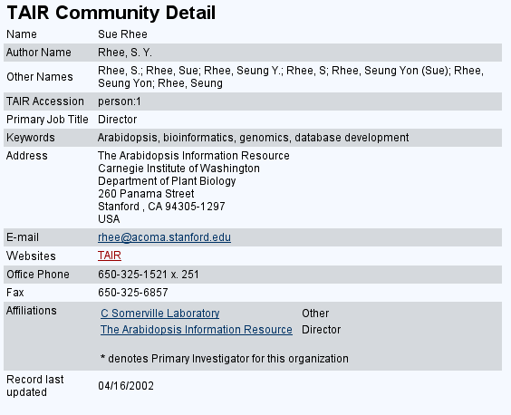
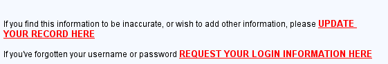

TAIR Community Details
When you click on the community name from the results page you will see the detailed record for that community entry.

Name
The name of the person or organization.
Author Name(s)
Name(s) as they appear in publications.
Other Name(s)
Other names, acronyms,etc... for the community entry.
TAIR Accession
The unique identifier for a community member in TAIR's database. The format is community type:numeric id.
Primary Job Title/Type
For a person, this indicates their primary job title (e.g Professor, Graduate Student). For an organization, this is the type of organization.
Keywords
A list of keywords that describe the interests of the person or organization.
Description/Research Interests
A short description of the organization or the research interests of the person.
Address
The main street address to use to contact the person or organization.
E-mail
Email address for the person or organization.Clicking on this link will open up a mail link to that address. If your browser is configured to send mail, you can use this to compose a message to the person/organization.
Websites
Web site(s) for the person (e.g.personal homepage) or organization (e.g. lab homepage, database homepage).Clicking on the name of the website will take you to that site.
Office/Main Phone
Area code and phone number for the person or organization.
Fax
Area code and number for sending facsimiles (faxes) to the person or organization.
Affiliations
For a person, these are the affiliations of this person to an organization.The format is organization name, relationship (e.g. contact person, coordinator). For an organization, this lists the people who are affiliated with the organization and their relationship to the organization(e.g. director, post-doctoral researcher).Clicking on the community name will take you to the affiliated person or organization.
Record last updated
Indicates the date this record was last updated.
Update/Login Information
At the bottom of each page are links to assist you in updating your TAIR community profile.For more information on registering with TAIR see Registering with TAIR.

Update your record.
If you are already logged in, clicking on this link will take you to the Community Update page which displays the current information in TAIR for your personal profile including affiliations (if there are any). If you are not yet logged in, you will first be prompted to login before you can update your profile.
Request your login information
If you have forgotten your username and password, clicking on this link will take you to a page where you can get a reminder of your username and a password hint if you have entered one. IF THE RECORD CORRESPONDS TO YOUR PROFILE and you remember your password, you can enter it here and login. Or, if you cannot remember the password, and your email address is valid, click on email me Login info. and you will receive your password via email.If your email address is not correct (e.g. the entry is yours but outdated) please send a request for login information to curator@arabidopsis.org.